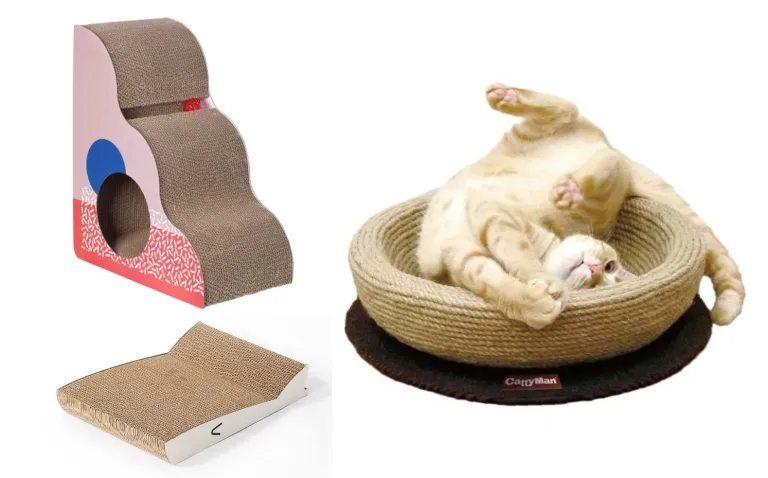
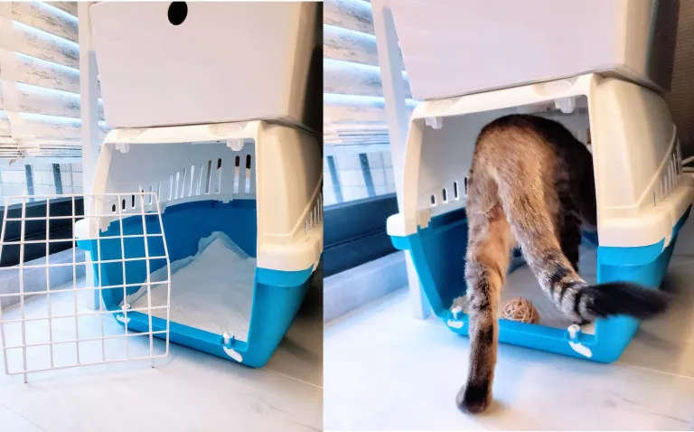

8個必備貓用品
1.貓咪躲藏處
2.食器與水杯
3.貓食
4.貓砂與貓砂盆

5.貓抓板
6.清潔用品
7.貓玩具

8.外出籠
甚麼居家環境適合養貓? 養貓空間要多大?
1.有足夠的活動空間
養貓所需的空間雖然比養狗小很多，但仍需要提供給貓咪足夠的活動空間，原則上空間越大越好、最起碼貓咪能夠有空間奔跑，也有不少貓奴和貓咪一起住在坪數較大的套房中。
2.環境別太髒亂
環境亂容易找不到貓咪在哪，而環境髒的話則可能讓貓咪誤食髒東西，還可能讓貓咪因此出現皮膚、呼吸道等問題，因此保持環境衛生也是很必要的。
3.是否有其他寵物
有些貓咪非常親人、但無法和其他動物和平共處，若家中已有其他動物，請特別謹慎評估貓咪能否順利融入環境。
4.最好能有對外窗
能有對外窗是大加分！對外窗也能讓室內空氣更流通、也能讓貓咪曬到太陽，且對貓咪來說，窗外景色就像一台永遠看不膩的電視，能夠看到窗外的人事物，對貓咪而言是很開心的事情；但新手貓奴千萬要小心，對外窗的防護措施一項都不能少，以免貓咪不小心摔出窗外、發生憾事。
帶貓咪回家前需要做的事!
1.給專業獸醫檢查
建議將貓咪帶回家前，要先經過專業獸醫的基本檢查，包含血液檢查、體內外驅蟲等，並且在帶回貓咪約一至兩週後，再到動物醫院接種貓咪的五合一疫苗。
2.足夠的耐心及距離
並非所有貓咪都會馬上很親人，尤其當貓咪來到一個全新的環境，難免會緊張害怕、甚至難以接近，若貓咪一開始常常躲起來，這時候就先別打擾他了！給他時間適應，信任感逐漸建立後戒心才會慢慢放下，而這通常需要一些時間。
3.食物誘騙
除了不打擾以外，提供好吃的食物也是快速建立信任感的最佳捷徑之一！當貓咪了解到你會提供他好吃的食物、並且不會傷害他以後，相信他會越來越願意親近你！
檢視自己是否適合養貓!
養貓是動輒需要持續 10
年以上的事情，千萬別一時覺得貓咪可愛就帶回家，對你而言養貓可能只是某一部分的人生階段，但對貓咪而言這裡是他一輩子的家，決定養貓前請先做好相關準備、並且要有照顧他一輩子的決心；因此會建議，平常生活忙碌很少在家的人、近幾年可能會搬家並且無法帶貓咪一起的人、或是感情尚未太穩定的情侶等，可能都要想清楚自己該不該養貓。
幼貓 or 成貓?
幼貓固然可愛，但即便有養貓經驗的人也不一定懂得照顧幼貓，因此對沒經驗的新手來說，建議還是養成貓吧！若是碰巧撿到需要照顧的小貓，也非常建議交給有經驗的老手來照顧，幼貓的身體機能和免疫系統都相對脆弱，毫無經驗就養幼貓的風險相對而言非常大。
養貓的好處 & 壞處?
好處
1.陪伴
生活中有貓咪陪伴，是非常幸福的一件事，比起家中空無一人，知道家裡有貓咪在等你、開門時有貓咪迎接你，這是所有貓咪飼主都非常享受的事。
2.療癒
貓咪真的太可愛了，對喜歡貓咪的人來說，不論是抱貓咪、摸貓咪或甚至只要看著貓咪，就能感覺到身心靈被療癒了，也有不少人特別鍾愛貓咪身上的味道，因此每天都要進行「吸貓儀式」，若你也會因為前述這些行為而感到被療癒，那你很可能就是適合養貓的潛在貓奴！
3.認識新朋友
有了貓咪之後，生活中自然有一部分會被貓咪佔據，而通常也會因此結交到新朋友、或與同樣有養貓的朋友往來更頻繁。
壞處
1.照顧貓咪的責任
如前述提到，養貓咪是一輩子的事情，因此你每天都需要幫他準備食物、準備水，也要幫他清理貓砂盆中的大小便，這也是為什麼養貓的人都會被稱為「貓奴才」、簡稱「貓奴」，因為每天都需要照三餐伺候他！
2.額外花費
不論你養貓是窮養或富養，養貓都會產生一筆額外的開銷，除了購入貓咪需要的用具以外，貓咪的伙食費和貓砂也是每個月都需要支出的固定花費，更別提若貓咪健康出問題，找獸醫求助又是另一筆可觀的開支了。
3.較難出遠門
養貓之後若要出遠門，真的是非常頭痛的一件事，因為貓咪不會自己準備三餐，因此你可能需要花一筆錢讓貓咪暫住貓旅館、或是找可信賴的親友幫忙餵貓，而這些做法又遠不及自己照顧來的安心，因此這是養貓前需要特別評估的重點。
養貓的管道有哪些?
除了向合格合法的寵物業者購入以外，因應近年來提倡的「領養代替購買」，大家也可以選擇到各地的流浪動物收容所逛逛，這些地方通常都有很多正在找家的可愛貓咪。
其他養貓的常見問題
- 養貓需要多少花費?
以最基本的花費而言，養一隻貓咪每月的伙食費和貓砂費用，最少約需新台幣 2～3000 元以上，而一開始購入養貓所需的用品也同樣需要新台幣 2～3000 元左右，若選擇較好的飼料、貓砂等，則費用可能會再略高一些，若貓咪身體出問題，找獸醫治療就又是一筆額外的開銷了。
- 貓可以養在房間嗎？
有些貓奴是將貓咪養在房間的，但除了如前述提到，仍要讓貓咪有足夠的活動空間外，在貓砂盆的清理上就要更頻繁了，以免未及時清掉的貓咪排泄物散發異味。